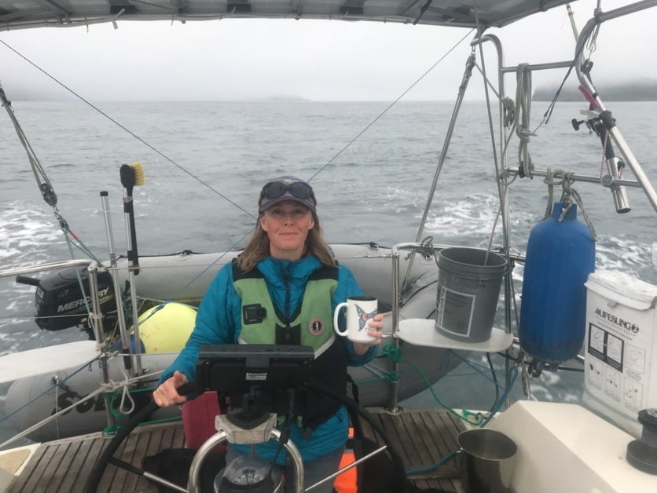
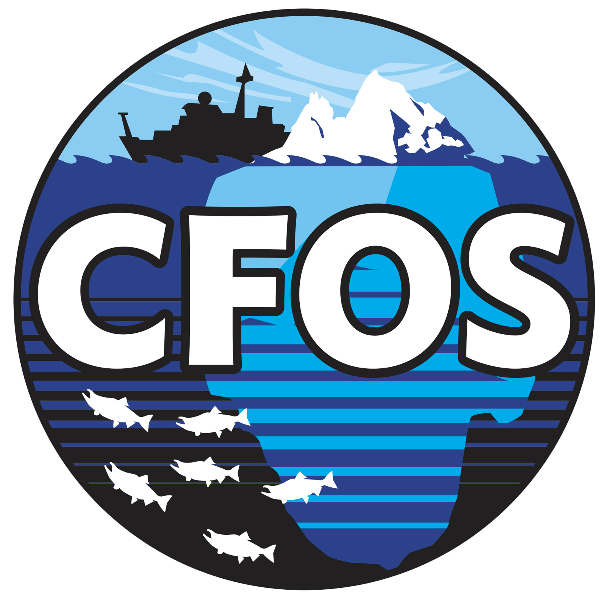
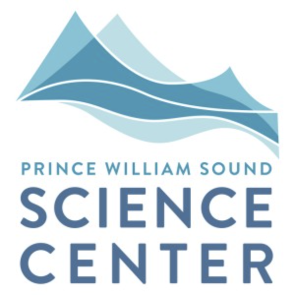
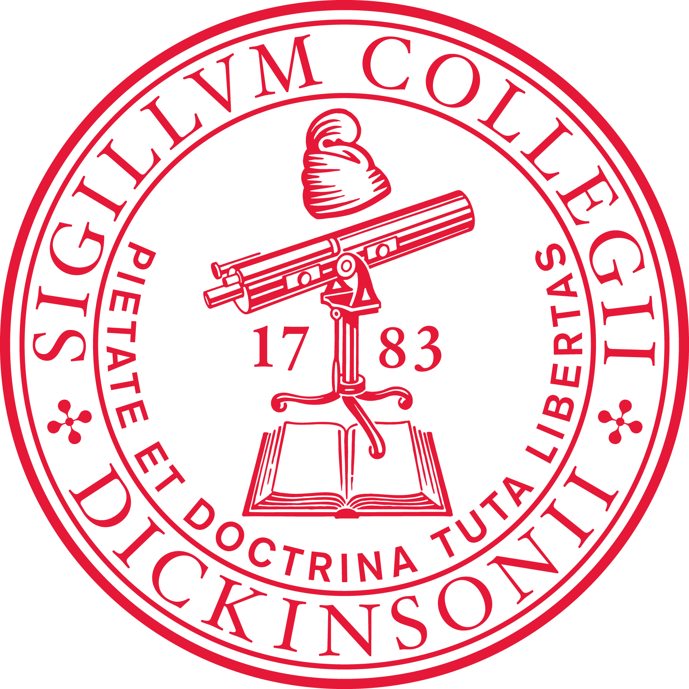

College of Fisheries and Ocean Sciences
Department of Marine Biology
University of Alaska Fairbanks
2150 Koyukuk Drive, 245 O’Neill Building
Fairbanks, Alaska 99775-7220
Tel: 907-474-5930
Office: Irving II 230, Lab: O’Neill 141
UAF web: https://uaf.edu/cfos/people/faculty/detail/kristen-gorman.php
Pronouns: she/her
I respectfully acknowledge Alaska’s First Peoples and their long history of
living in deep connection with their land and water, and the historical and
ongoing legacy of colonialism. As a life-long student, I am committed to
learning about injustice, and working to improve equity in my professional
and personal life.
I am a broadly trained fisheries and wildlife ecologist focused on high latitude coastal and pelagic marine ecosystems (Pacific northwest and Alaska, western Antarctic Peninsula). My research interests lie at the intersection of evolution, ecology, and physiology, thus I take integrative approaches to understanding factors that shape animal behavior (foraging, breeding, toxicology/disease, and movement ecology), fitness (including associated life history traits and trade-offs), and population dynamics (demographic rates and population structure) to advance basic knowledge and inform management and conservation actions. The overarching goal of my work is to develop molecule to ecosystem perspectives focusing on the integrative evolutionary ecology of animal systems, some of which are critically important for commercial fisheries and subsistence harvests. I incorporate modern, quantitative methods in my work, and strive to inspire students to develop their own quantitative and communication skills to train the next generation of conservation ecologists. I also aim to enhance the public’s interest in nature and understanding of the scientific process. I am always looking for new collaborators and students to join my program, please reach out to me if you have interest in my work - a few recent papers are noted below. Thanks for stopping by!
Schaefer, A.L., K.B. Gorman, and M.A. Bishop. 2022. Light-level geolocation reveals the short-distance non-breeding movements and distribution of tufted puffins throughout the Northeast Pacific Ocean. Frontiers in Marine Science 9:999461.
Guo, C., B.H. Konar, K.B. Gorman, and C.M. Walker. 2022. Environmental factors important to high-latitude nearshore estuarine fish community structure. Deep-Sea Research II 201:105109.
Horst, A.M., A.P. Hill, and K.B. Gorman. 2022. Palmer Archipelago Penguins Data in the palmerpenguins R Package - An Alternative to Anderson’s Irises. The R Journal 14(1):244-254.
Fall 2022: We are recruiting a MS graduate student to join a new project focused on ecological interactions between Pacific herring and pink salmon that may have consequences for recruitment of both populations in Prince William Sound (PWS), Alaska. Details can be found here.
Assistant Professor of Marine Biology (Aug 2022–Present)
College of Fisheries and Ocean Sciences, University of Alaska Fairbanks
Fairbanks, Alaska
Research Assistant Professor of Marine Biology (Nov 2018–Aug 2022)
College of Fisheries and Ocean Sciences, University of Alaska Fairbanks
Fairbanks, Alaska
Research Ecologist (Jul 2014–Nov 2018)
Prince William Sound Science Center
Cordova, Alaska
PhD (2015)
Department of Biological Sciences, Simon Fraser University, Burnaby, British Columbia, Canada and
Palmer LTER-NSF, Palmer Station, Antarctica
MSc (2005)
Department of Biological Sciences, Simon Fraser University, Burnaby, British Columbia, Canada and
Alaska Science Center–USGS, Anchorage, Alaska, USA
BS (1996)
Department of Biology, Dickinson College, Carlisle, Pennsylvania, USA
© Copyright 2021, Kristen B. Gorman, PhD
Website last updated 28 December 2022